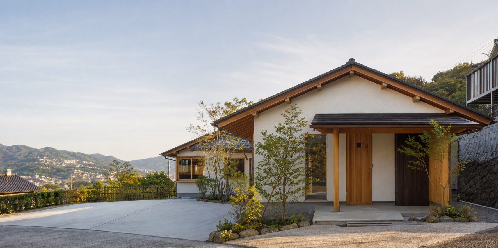
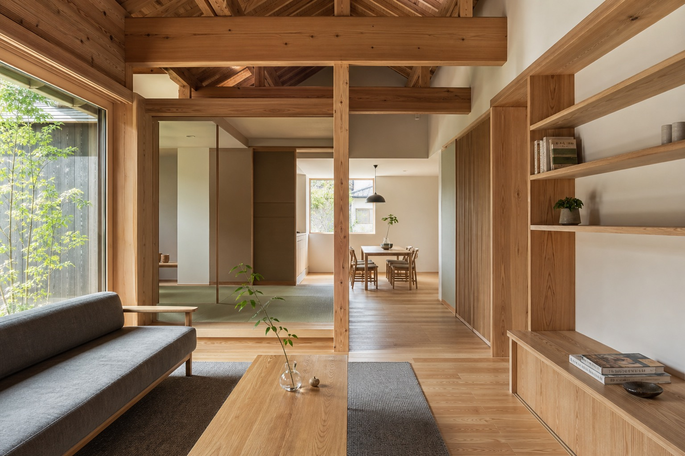
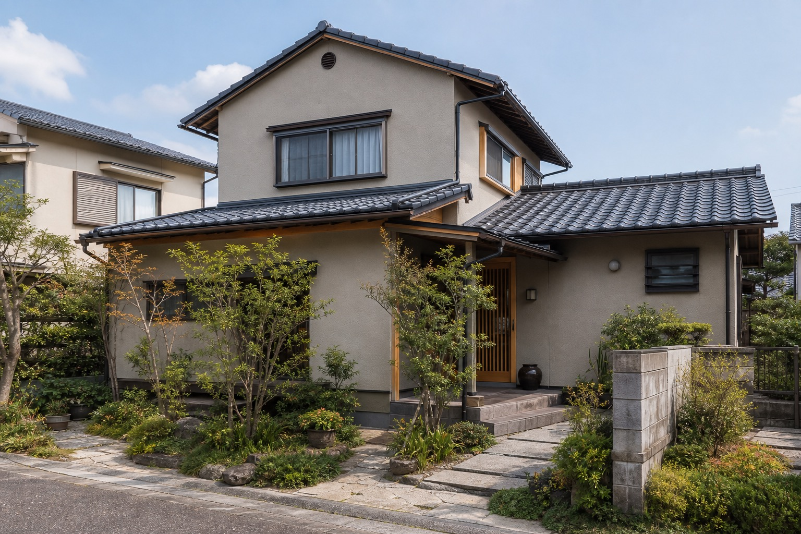
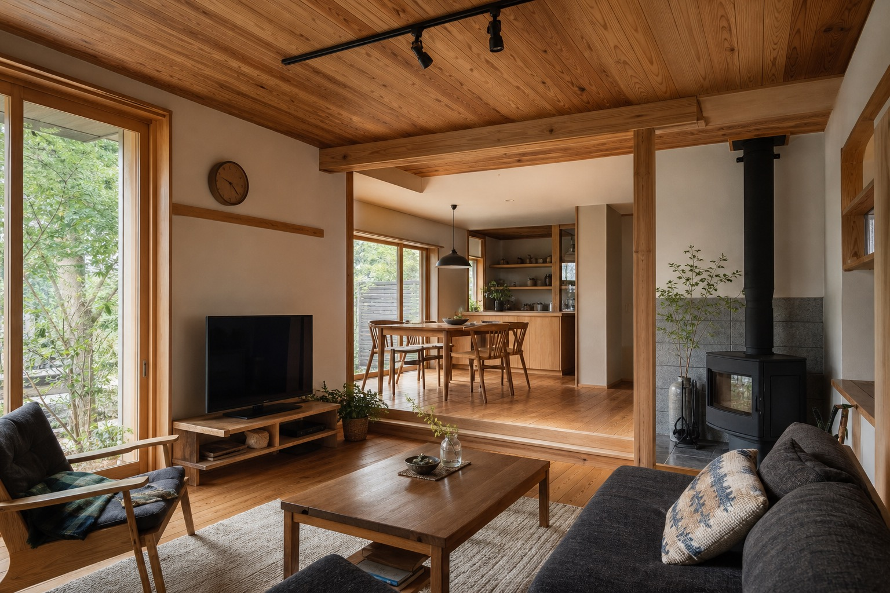
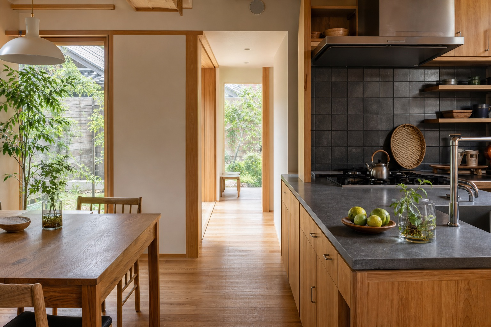

新築
創業からの注文住宅工事を軸に、相談、プラン、見積、施工、引き渡し、アフターフォローまでの流れを整理して伝えます。

仮画像Nagasaki Sasebo / Since 1975
長崎県佐世保市で、新築・リフォーム・介護リフォーム・簡易工事まで向き合う工務店の提案用リニューアルデモです。
Concept
既存サイトでは「住まいの悩みはなんでもお任せください」という姿勢が強く伝わります。新しい見せ方では、その親しみやすさを残しながら、創業から続く現場経験と対応範囲の広さを、落ち着いた言葉と写真で伝えます。
新築だけを大きく見せるのではなく、リフォーム、介護保険の住宅改修、雨戸の取り替えなどの簡易工事まで、相談しやすい会社であることを最初の数秒で分かる構成にしています。

Services
創業からの注文住宅工事を軸に、相談、プラン、見積、施工、引き渡し、アフターフォローまでの流れを整理して伝えます。
大規模改修から住まいの不便の解消まで。現地ヒアリング、提案、見積、施工の流れが伝わる導線にします。
既存サイトで確認できる介護保険の住宅改修工事を、家族が相談しやすい入口として掲載します。
雨戸の取り替えなど、日々の困りごとを頼める工務店として見せます。対応範囲の詳細は公開前に要確認です。
会社概要で確認できる学校、病院、その他公共施設の請負も、会社の信頼材料として控えめに掲載します。
Strength
Works
既存サイトでは外壁塗装改修、屋外アプローチなどのリフォーム事例が確認できます。ここでは実在案件名を作らず、仮画像として見せ方のみ提案します。



Contact
既存サイトの問い合わせ導線を、電話・メール・フォームの3つに整理したデモです。フォームは営業提案用サンプルで、実際には送信されません。
0956-22-6295Company
For Proposal
公開前には実写真、営業時間、対応エリア、現在の採用・イベント情報を確認してください。
問い合わせ導線へ